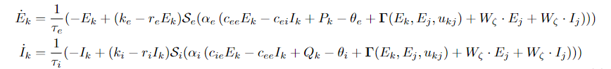

January 18-20, 2023: The Virtual Brain (TVB): create network dynamics
Contents
January 18-20, 2023: The Virtual Brain (TVB): create network dynamics¶
import csv
import os
import pickle
import random
import sys
from os.path import join as pjoin
import numpy as np
import tvb.simulator.lab as tsl
from tvb.simulator.plot.phase_plane_interactive import PhasePlaneInteractive
from tvb.simulator.plot.timeseries_interactive import TimeSeriesInteractivePlotter
# main dirs
proj_dir = pjoin(os.environ['HOME'], 'network_estimation')
month_dir = f"{proj_dir}/nb/jan23"
# plotting
import matplotlib as mpl
import matplotlib.pyplot as plt
import seaborn as sns
plt.rcParamsDefault['font.family'] = "sans-serif"
plt.rcParamsDefault['font.sans-serif'] = "Arial"
plt.rcParams['font.size'] = 14
plt.rcParams["errorbar.capsize"] = 0.5
import cmasher as cmr # CITE ITS PAPER IN YOUR MANUSCRIPT
# folders
sys.path.insert(0, proj_dir)
# import helpers.dataset_utils_v1 as dataset_utils
# import helpers.fc_utils as fc_utils
# import helpers.isc_utils as isc_utils
# import helpers.network_utils as network_utils
/home/govindas/venvs/nw_estim/lib/python3.9/site-packages/tvb/datatypes/surfaces.py:64: UserWarning: Geodesic distance module is unavailable; some functionality for surfaces will be unavailable.
warnings.warn(msg)
def plot_roi_time_series(args, time, data):
# plot the time series of all rois.
# %matplotlib inline
if args.subplot_layout == 'row-col':
nrows, ncols = int(np.ceil(args.num_rois / 5)), 5
figsize = (5*ncols, 4*nrows)
elif args.subplot_layout == 'row':
nrows, ncols = args.num_rois, 1
figsize = (10*ncols, 4*nrows)
fig, axs = plt.subplots(
nrows=nrows,
ncols=ncols,
figsize=figsize,
sharex=True,
sharey=True,
dpi=120,
)
plt.subplots_adjust(
left=None, bottom=None,
right=None, top=None,
wspace=None, hspace=0.5
)
state_var = 0
for idx_roi, roi in enumerate(np.arange(data.shape[2])):
if args.subplot_layout == 'row-col':
ax = axs[idx_roi // ncols, idx_roi % ncols]
elif args.subplot_layout == 'row':
ax = axs[idx_roi]
ax.set_title(f"ROI {roi:02}")
ax.plot(
data[:, state_var, idx_roi, 0],
color='cornflowerblue',
linewidth=3,
)
# ax.fill_between()
ax.set_xlabel(f"time (s)")
ax.set_ylabel(f"activity")
spc = len(time) // 5
pos = np.arange(0, len(time), spc)
labels = np.round(time[::spc]) / 1000
#f"{np.array2string(time[::spc], precision=2, floatmode='fixed')}".split(" ")
ax.set_xticks(pos, labels)
ax.grid(True)
# fig.show()
return None
class ARGS(): pass
args = ARGS()
connectome¶
wm = tsl.connectivity.Connectivity()
args.num_rois = 12
wm.number_of_regions = args.num_rois
# weights – connection strengths, i.e. number of fibres
weights = np.random.randn(args.num_rois, args.num_rois)
weights = (weights + weights.T) / 2
weights[np.diag_indices(args.num_rois)] = 0.0
weights[weights < 0] = 0.0
wm.set_weights(weights, args.num_rois)
# fibre lengths
tract_lengths = weights * 42
wm.set_tract_lengths(tract_lengths, args.num_rois)
# roi centers
wm.centres_spherical(args.num_rois)
# roi names
wm.create_region_labels()
# hemispheres
hemispheres = np.array(
[False for _ in range(len(wm.region_labels) // 2)] +
[True for _ in range(len(wm.region_labels) // 2)]
)
wm.set_hemispheres(hemispheres, args.num_rois)
# configure
wm.configure()
# wm = tsl.connectivity.Connectivity()
# wm.motif_chain_directed(num_rois)
# wm.centres_spherical(num_rois)
# wm.create_region_labels()
# wm.configure()
dynamics model¶
generic 2D oscillator¶
oscillator = tsl.models.oscillator.Generic2dOscillator(
variables_of_interest=['V'], #, 'W', 'V - W'],
# a=np.array([1.05]),
# b=np.array([-1.00]),
# c=np.array([0.0]),
# d=np.array([0.1]),
# I=np.array([0.0]),
# alpha=np.array([1.0]),
# beta=np.array([0.2]),
# gamma=np.array([-1.0]),
# e=np.array([0.0]),
# g=np.array([1.0]),
# f=np.array([1/3]),
# tau=np.array([1.25]),
)
coupling = tsl.coupling.Linear(a=np.array([0.0126]))
integrator = tsl.integrators.HeunDeterministic(dt=2**-6)
args.period = 2**-3 # ms
monitors = (
# tsl.monitors.RawVoi(),
# tsl.monitors.Bold(),
tsl.monitors.TemporalAverage(period=args.period),
tsl.monitors.ProgressLogger(period=1e3),
)
# %matplotlib widget
# ppi = PhasePlaneInteractive(model=oscillator)
# ppi.show()
sim = tsl.simulator.Simulator(
model=oscillator,
connectivity=wm,
coupling=coupling,
integrator=integrator,
monitors=monitors,
simulation_length=1e4,
).configure()
# (time, data) = sim.run()
run_res = sim.run()
time, data = run_res[0]
# `data` dimensions are ("Time", "State Variable", "Region", "Mode")
time.shape, data.shape
args.subplot_layout = 'row-col'
plot_roi_time_series(args, time, data)
WARNING random_state supplied for non-stochastic integration
INFO step 1 time 0.0000 s
INFO step 64001 time 1.0000 s
INFO step 128001 time 2.0000 s
INFO step 192001 time 3.0000 s
INFO step 256001 time 4.0000 s
INFO step 320001 time 5.0000 s
INFO step 384001 time 6.0000 s
INFO step 448001 time 7.0000 s
INFO step 512001 time 8.0000 s
INFO step 576001 time 9.0000 s
# just to ensure that the order of variables in the `data`
# is same as that we set in the `model` (here 'V', 'W', 'V - W').
# assert(
# np.all(
# np.isclose(
# data[:5, 0, :, :].squeeze() - data[:5, 1, :, :].squeeze(),
# data[:5, 2, :, :].squeeze()
# )
# )
# )
# tsr = tsl.time_series.TimeSeriesRegion()
# tsr.time = time
# tsr.data = data
# tsr.sample_period = args.period / 1000
# tsr.sample_period_unit = 's'
# tsr.connectivity = wm
# tsr.time
# # %matplotlib widget
# tsi = TimeSeriesInteractivePlotter(time_series=tsr)
# tsi.configure()
# tsi.show()
reduced Wong-Wang model¶
model = tsl.models.ReducedWongWang(
a=np.array([0.27]),
w=np.array([1.0]),
I_o=np.array([0.3]),
)
coupling = tsl.coupling.Linear(a=np.array([0.5 / 50]))
integrator = tsl.integrators.EulerStochastic(dt=2**-3, noise=tsl.noise.Additive(nsig=np.array([1e-5])))
# tsl.integrators.HeunDeterministic(dt=2**-3)
args.period = 1.0
monitors = (
# tsl.monitors.RawVoi(),
# tsl.monitors.Bold(),
tsl.monitors.TemporalAverage(period=args.period),
tsl.monitors.ProgressLogger(period=1e3),
)
sim = tsl.simulator.Simulator(
model=model,
connectivity=wm,
coupling=coupling,
integrator=integrator,
monitors=monitors,
simulation_length=1e4,
).configure()
run_res = sim.run()
time, data = run_res[0]
time.shape, data.shape
args.subplot_layout = 'row-col'
plot_roi_time_series(args, time, data)
INFO step 1 time 0.0001 s
INFO step 8001 time 1.0001 s
INFO step 16001 time 2.0001 s
INFO step 24001 time 3.0001 s
INFO step 32001 time 4.0001 s
INFO step 40001 time 5.0001 s
INFO step 48001 time 6.0001 s
INFO step 56001 time 7.0001 s
INFO step 64001 time 8.0001 s
INFO step 72001 time 9.0001 s
noisy fluctuations due to noisy integration… may not carry much meaning…
Jansen and Rit model¶
model = tsl.models.JansenRit(
mu=np.array([0.0]),
v0=np.array(6.0),
)
phi_n_scaling = (model.a * model.A * (model.p_max-model.p_min) * 0.5 )**2 / 2.
sigma = np.zeros(6)
sigma[3] = phi_n_scaling
coupling = tsl.coupling.SigmoidalJansenRit(a=np.array([10.0]))
integrator = tsl.integrators.HeunStochastic(dt=2**-4, noise=tsl.noise.Additive(nsig=sigma))
# tsl.integrators.HeunDeterministic(dt=2**-3)
args.period = 2**-2
monitors = (
# tsl.monitors.RawVoi(),
# tsl.monitors.Bold(),
tsl.monitors.TemporalAverage(period=args.period),
tsl.monitors.ProgressLogger(period=1e3),
)
sim = tsl.simulator.Simulator(
model=model,
connectivity=wm,
coupling=coupling,
integrator=integrator,
monitors=monitors,
simulation_length=1e4,
).configure()
run_res = sim.run()
time, data = run_res[0]
time.shape, data.shape
plot_roi_time_series(args, time, data)
INFO step 1 time 0.0001 s
/home/govindas/venvs/nw_estim/lib/python3.9/site-packages/tvb/simulator/coupling.py:375: RuntimeWarning: overflow encountered in exp
pre = self.cmax / (1.0 + numpy.exp(self.r * (self.midpoint - (x_j[:, 0] - x_j[:, 1]))))
/home/govindas/venvs/nw_estim/lib/python3.9/site-packages/numba/np/ufunc/gufunc.py:170: RuntimeWarning: overflow encountered in _numba_dfun_jr
return self.ufunc(*args, **kwargs)
INFO step 16001 time 1.0001 s
INFO step 32001 time 2.0001 s
INFO step 48001 time 3.0001 s
INFO step 64001 time 4.0001 s
INFO step 80001 time 5.0001 s
INFO step 96001 time 6.0001 s
INFO step 112001 time 7.0001 s
INFO step 128001 time 8.0001 s
INFO step 144001 time 9.0001 s
Wilson Cowan model¶
from IPython.display import Image
Image(filename='wilson_cowan_equations.PNG')

# %matplotlib widget
wc = tsl.models.WilsonCowan()
ppi = PhasePlaneInteractive(
model=wc,
integrator=tsl.integrators.HeunDeterministic()
)
ppi.show()
/tmp/ipykernel_7975/506660618.py:5: DeprecationWarning: Call to deprecated class PhasePlaneInteractive. (Use tvb-widgets instead)
ppi = PhasePlaneInteractive(
# Daffertshofer, A. and van Wijk, B.
# On the influence of amplitude on the connectivity between phases
# Frontiers in Neuroinformatics, July, 2011
D_wc = tsl.models.WilsonCowan()
D_wc.k_e = np.array([1.0])
D_wc.k_i = np.array([1.0])
D_wc.r_e = np.array([0.0])
D_wc.r_i = np.array([0.0])
D_wc.c_ee = np.array([10.0])
D_wc.c_ei = np.array([6.0])
D_wc.c_ie = np.array([10.0])
D_wc.c_ii = np.array([1.0])
D_wc.a_e = np.array([1.0])
D_wc.b_e = np.array([0.0])
D_wc.b_i = np.array([0.0])
D_wc.theta_e = np.array([2.0])
D_wc.theta_i = np.array([3.5])
D_wc.alpha_e = np.array([1.2])
D_wc.alpha_i = np.array([2.0])
D_wc.P = np.array([0.5])
D_wc.shift_sigmoid = np.array(False)
D_wc.state_variable_range['E'] = np.array([0.,1.0])
D_wc.state_variable_range['I'] = np.array([0.,1.0])
ppi = PhasePlaneInteractive(
model=D_wc,
integrator=tsl.integrators.HeunDeterministic(),
)
ppi.show()
/tmp/ipykernel_7975/4217252777.py:26: DeprecationWarning: Call to deprecated class PhasePlaneInteractive. (Use tvb-widgets instead)
ppi = PhasePlaneInteractive(
model = D_wc
coupling = tsl.coupling.Linear()
integrator = tsl.integrators.HeunStochastic(dt=2**-4, noise=tsl.noise.Additive())
# integrator = tsl.integrators.HeunDeterministic(dt=2**-3)
args.period = 2**-2
monitors = (
# tsl.monitors.RawVoi(),
# tsl.monitors.Bold(),
tsl.monitors.TemporalAverage(period=args.period),
tsl.monitors.ProgressLogger(period=1e3),
)
sim = tsl.simulator.Simulator(
model=model,
connectivity=wm,
coupling=coupling,
integrator=integrator,
monitors=monitors,
simulation_length=1e4,
).configure()
run_res = sim.run()
time, data = run_res[0]
time.shape, data.shape
args.subplot_layout = 'row-col'
plot_roi_time_series(args, time, data)
INFO step 1 time 0.0001 s
INFO step 16001 time 1.0001 s
INFO step 32001 time 2.0001 s
INFO step 48001 time 3.0001 s
INFO step 64001 time 4.0001 s
INFO step 80001 time 5.0001 s
INFO step 96001 time 6.0001 s
INFO step 112001 time 7.0001 s
INFO step 128001 time 8.0001 s
INFO step 144001 time 9.0001 s
plt.plot(data[:2000, 0, 0, 0])
[<matplotlib.lines.Line2D at 0x7f53a0261be0>]
model = D_wc
coupling = tsl.coupling.Linear()
# integrator = tsl.integrators.HeunStochastic(dt=2**-4, noise=tsl.noise.Additive())
integrator = tsl.integrators.HeunDeterministic(dt=2**-3)
args.period = 2**-2
monitors = (
# tsl.monitors.RawVoi(),
# tsl.monitors.Bold(),
tsl.monitors.TemporalAverage(period=args.period),
tsl.monitors.ProgressLogger(period=1e3),
)
sim = tsl.simulator.Simulator(
model=model,
connectivity=wm,
coupling=coupling,
integrator=integrator,
monitors=monitors,
simulation_length=1e4,
).configure()
run_res = sim.run()
time, data = run_res[0]
time.shape, data.shape
args.subplot_layout = 'row-col'
plot_roi_time_series(args, time, data)
WARNING random_state supplied for non-stochastic integration
INFO step 1 time 0.0001 s
INFO step 8001 time 1.0001 s
INFO step 16001 time 2.0001 s
INFO step 24001 time 3.0001 s
INFO step 32001 time 4.0001 s
INFO step 40001 time 5.0001 s
INFO step 48001 time 6.0001 s
INFO step 56001 time 7.0001 s
INFO step 64001 time 8.0001 s
INFO step 72001 time 9.0001 s
plt.plot(data[:2000, 0, 0, 0])
[<matplotlib.lines.Line2D at 0x7f539da08a30>]